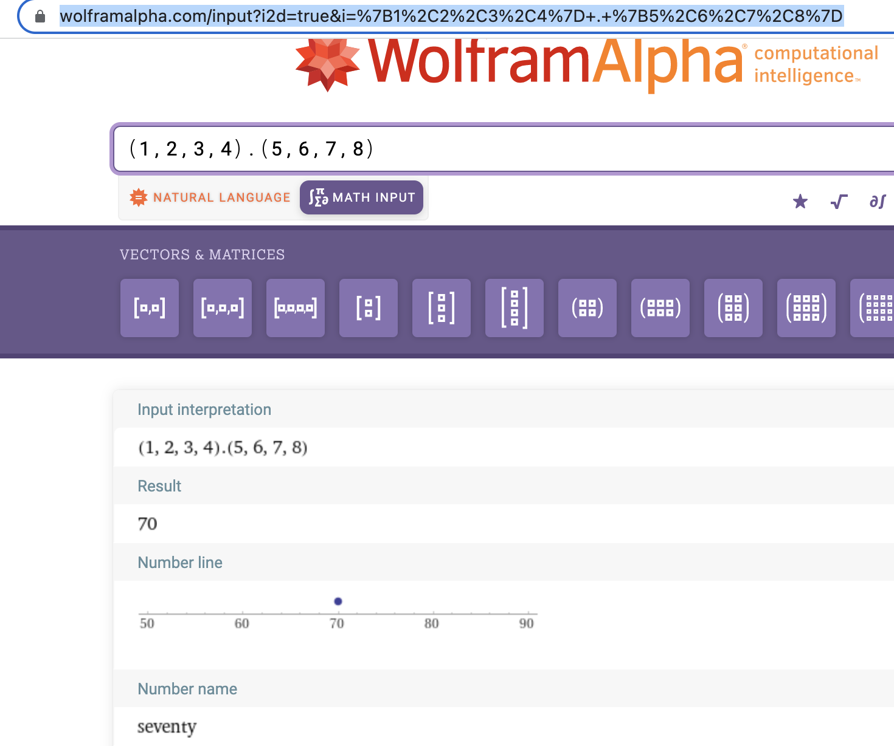
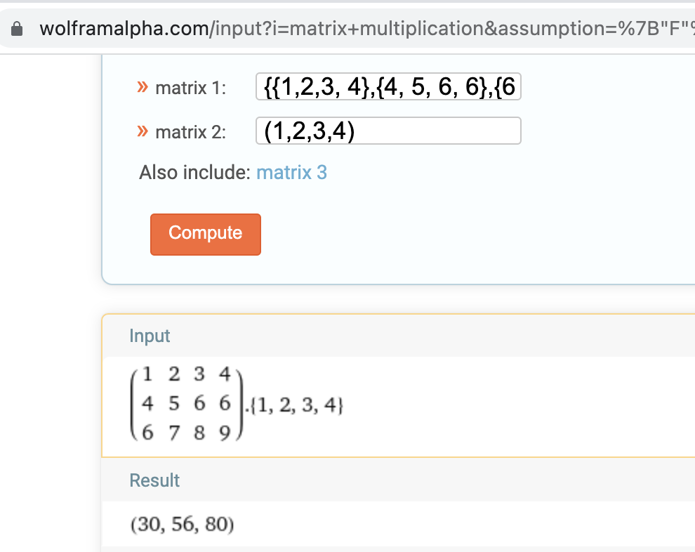
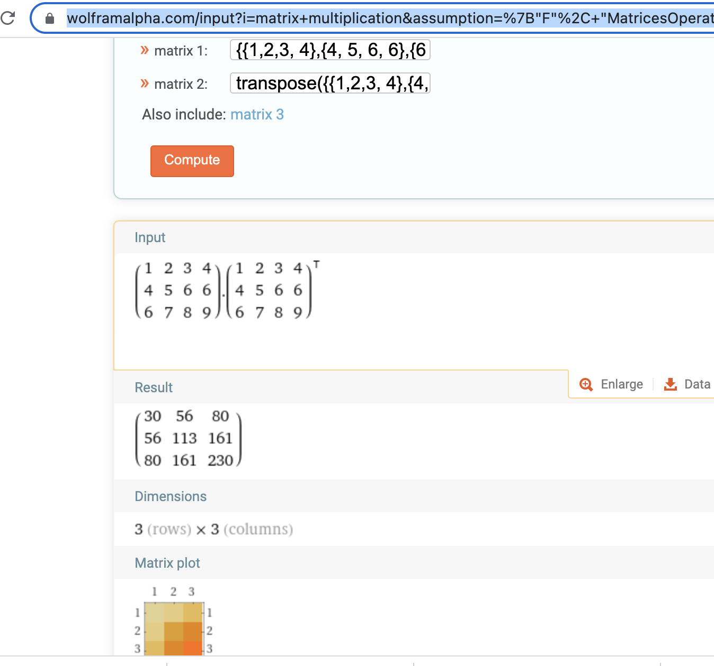

2.37
练习 2.37 假定我们将向量 v=(vi) 表示为数的序列，将矩阵m=(mij)表示为向量（矩阵行）的序列。例如，矩阵：
用序列((1 2 3 4) (4 5 6 6) (6 7 8 9))表示。对于这种表示，我们可以用序列操作简洁地表达基本的矩阵与向量运算。这些运算（任何有关矩阵代数的书里都有描述）如下：
(dot-product v w) 返回和 ；
(matrix-*-vector m v) 返回向量 t，其中 ；
(matrix-*-matrix m n) 返回矩阵 p，其中 ；
(transpose m) 返回矩阵 n，其中 。
我们可以将点积 (dot product) 定义为：
(define (dot-product v w)
(accumulate + 0 (map * v w)))
请填充下面过程里缺失的表达式，它们计算出其他的矩阵运算结果（过程 accumulate-n 在练习 2.36 中定义）。
(define (matrix-*-vector m v)
(map <??> m))
(define (transpose mat)
(accumulate-n <??> <??> mat))
(define (matrix-*-matrix m n)
(let ((cols (transpose n)))
(map <??> m)))
首先，定义 accumulate
(define (accumulate op initial sequence)
(if (null? sequence)
initial
(op (car sequence)
(accumulate op initial (cdr sequence)))
)
)
(define (dot-product v w)
(accumulate + 0 (map * v w)))
(dot-product (list 1 2 3 4) (list 5 6 7 8))
对比:

(define (matrix-*-vector m v)
(map (lambda (m_i) (dot-product m_i v)) m))
(define m (list (list 1 2 3 4) (list 4 5 6 6) (list 6 7 8 9)))
(define v (list 1 2 3 4))
(matrix-*-vector m v)
对比：

然后，再定义 accumulate-n
(define (accumulate-n op init seqs)
(if (null? (car seqs))
'()
(cons (accumulate op init (map car seqs))
(accumulate-n op init (map cdr seqs)))))
(define s (list (list 1 2 3) (list 4 5 6) (list 7 8 9) (list 10 11 12)))
(accumulate-n + 0 s)
(define (transpose mat)
(accumulate-n cons '() mat))
(transpose m)
(define (matrix-*-matrix m n)
(let ((cols (transpose n)))
(map (lambda (v) (matrix-*-vector cols v)) m)))
(define n (transpose m))
(matrix-*-matrix m n)
对比：
